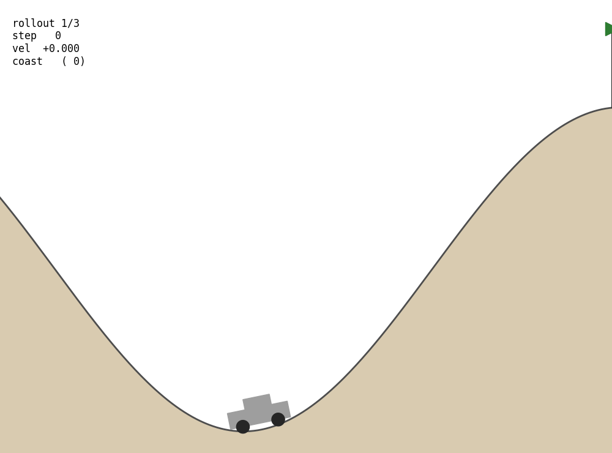
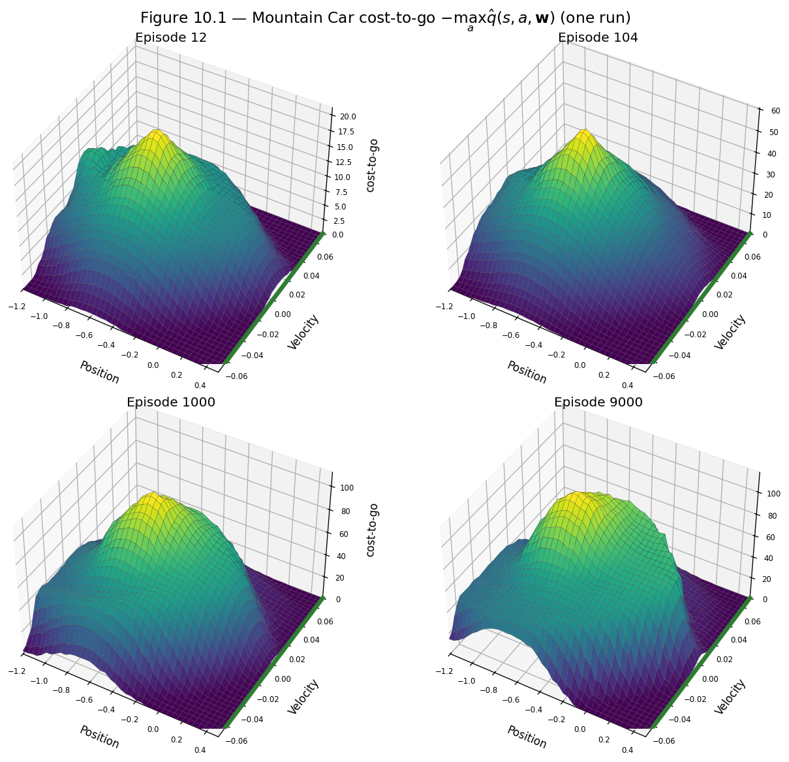
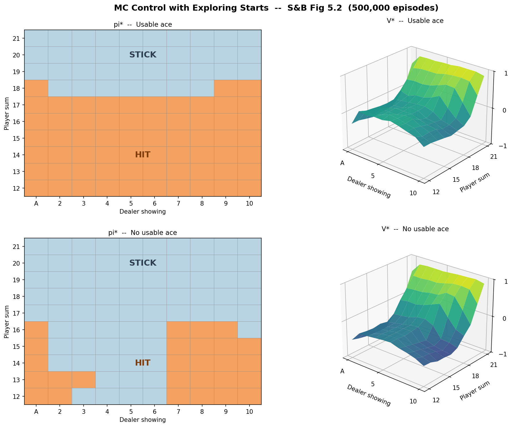
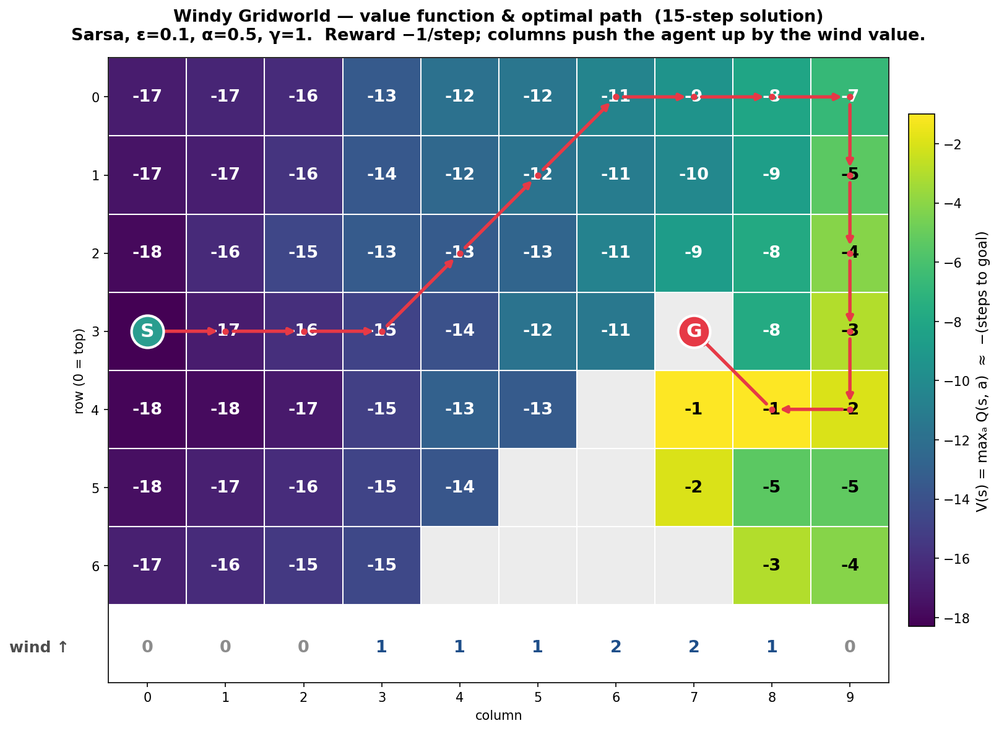
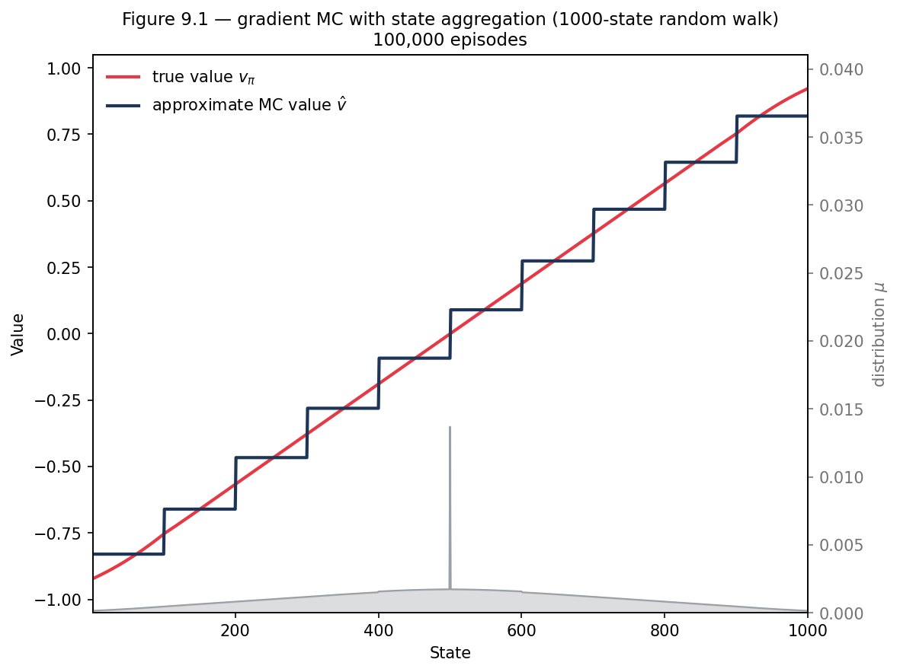

Reinforcement Learning — Sutton & Barto
Reinforcement learning algorithms implemented from scratch with mathematical derivations and faithful reproductions of figures from Sutton & Barto: Reinforcement Learning, An Introduction (2nd ed., 2020). The focus is on understanding each method — from tabular Monte Carlo and temporal-difference control to function approximation and policy gradients — as a building block for Machine Learning, AI, and Robotics.
Algorithms
- Monte Carlo: prediction, control with exploring starts, on-policy ε-soft control.
- Temporal-Difference: TD(0), Sarsa, Q-learning, n-step TD / Sarsa, TD(λ), Sarsa(λ).
- Function approximation: gradient Monte Carlo, semi-gradient TD / Sarsa, n-step semi-gradient methods.
- Representations: state aggregation and tile coding over linear value / action-value models.
- Dynamic programming: exact policy evaluation used as ground truth.
Environments & figure reproductions
- Blackjack — MC prediction & control (Figs 5.1, 5.2).
- Windy Gridworld — on-policy Sarsa control (Example 6.5).
- 1000-state Random Walk — gradient MC & n-step bootstrapping with state aggregation (Figs 9.1, 9.2).
- Mountain Car — episodic semi-gradient Sarsa with tile coding (Fig 10.1).
Gallery





Related repositories
Part of a sequence from mathematical foundations to deep RL:
- Foundations — Real Analysis, Probability & Distribution Theory, Statistical Inference Theory
- RL theory — Sequential Decision Making
- This repo — Reinforcement Learning: Sutton & Barto algorithms and figure reproductions
- Next — Deep Reinforcement Learning